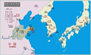
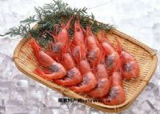
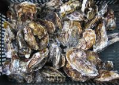
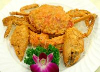

威海，一个美丽的海滨城市
威海历史
威海的历史可以追溯到新石器时代，在先秦时期隶属青州，于西汉 首次建县；隋唐时期，由文登县和牟平县分别管辖；明朝设威海卫， 取“威震东海”之义；清后期时作为甲午海战的最后的根据地，但后 来惨遭英国占领。
地理特点

处于温带季风气候区，冬冷夏热；三面环海，拥有长达95千米的海岸线， 有效降低了四季的温度变化幅度。位于山东省的最东部，临近日本和韩 国，三地之间有较为繁忙的交流。空气质量极佳，平均全年有300多天能 看到蓝天白云。
旅游饮食
  
威海三面环海，使得当地具有丰富的海鲜，从而在海鲜烹饪上颇有造诣， 随口一问威海美食，必定有海鲜：海参、鲍鱼、对虾……以及著名的鲅鱼饺子。
推荐网站
百度百科：威海
威海美食